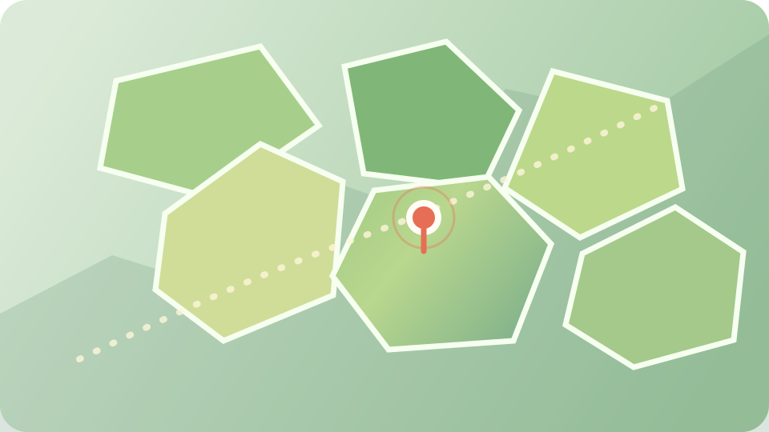

GODOMÉ KOFFI · Connu sous le nom de Jean-David · Côte d’Ivoire
Expert Meta Ads
IA & Automatisation
Développeur Full Stack
J’aide les entreprises à acquérir des prospects, automatiser leur suivi commercial et livrer les outils web adaptés. Meta Ads, n8n, WhatsApp Business, CRM et développement Full Stack réunis autour d’objectifs mesurables.
5+ ans en marketing digital115+ campagnes pilotées5 000+ prospects générés5 000+ conversations · 700 USD
Quelques résultats
Des volumes, avec leur contexte.
Résultats communiqués sur plusieurs missions, complétés par un exemple de campagne documenté plus bas.
Les volumes de prospects et de conversations sont des indicateurs distincts. Les agrégats sont communiqués par le candidat; ils ne constituent pas une attribution indépendante des ventes ou du chiffre d’affaires.
À propos
Relier acquisition et opérations.
Meta Ads, développement Full Stack et automatisation au service des besoins métier.
Je suis GODOMÉ KOFFI, connu sous le nom de Jean-David. Expert Meta Ads et développeur Full Stack, je travaille à l’intersection de l’acquisition digitale, de l’automatisation IA et des applications métier.
Mon approche relie les campagnes aux opérations commerciales : générer des demandes, organiser leur suivi avec n8n, CRM et WhatsApp Business, puis développer les intégrations ou outils web nécessaires.
Formateur en marketing digital et concepteur d’agents IA, je cadre chaque mission autour d’un objectif, d’un périmètre livrable et d’indicateurs disponibles. Les résultats publiés sont distingués des ventes attribuées.
Services
Une expertise, trois leviers.
Des interventions cadrées selon le besoin : acquisition, automatisation ou développement d’outils métier.
Meta Ads & acquisition
Structurer, piloter et optimiser des campagnes orientées génération de prospects, avec un suivi fondé sur les données accessibles.
- Audit et recommandations de compte
- Gestion des campagnes Meta Ads
- Suivi des résultats et pistes d’optimisation
IA & automatisation marketing
Réduire les tâches répétitives et organiser le traitement des demandes grâce à des workflows et agents IA adaptés au métier.
- Automatisations n8n et CRM
- WhatsApp Business API
- Agents conversationnels avec relais humain
Développement Full Stack
Concevoir des applications web et intégrations pour transformer un besoin opérationnel en outil utilisable.
- Interfaces React et Next.js
- Services Node.js et Express
- Connexion aux données et outils métier
Études de cas
Meta Ads, automatisation
et produits numériques.
Des campagnes Meta Ads et solutions métier présentées avec leur contexte, leur périmètre et les résultats réellement mesurés.
Meta Ads · Acquisition par conversations
Objectif. Générer des conversations entrantes pour trois promotions commerciales.
Approche. Pilotage et optimisation des campagnes Meta Ads à partir des résultats disponibles.
Résultat mesuré. 436 conversations initiées pour 63,29 USD dépensés (≈ 0,15 USD par conversation). La cliente a rapporté des ventes et une rupture de stock; chiffre d’affaires et ROAS non attribués indépendamment.
TEADIS_AI · Assistant d’analyse de données
Problème. Rendre les données métier plus accessibles aux équipes non techniques.
Solution. Agent IA qui reçoit des questions en langage naturel et génère des restitutions structurées et visuelles.
Résultat / portée. Parcours conversationnel d’exploration multilingue; volume d’usage et gain de temps non communiqués.
Agent IA commercial · WhatsApp Business
Problème. Structurer le premier traitement des questions commerciales récurrentes.
Solution. Workflow reliant un agent conversationnel, une base de connaissances et WhatsApp Business, avec possibilité de relais humain.
Résultat / statut. Parcours d’automatisation conçu; taux de résolution, délai de réponse et conversions ne sont pas encore mesurés.

Facturation électronique · FNE
Problème. Numériser un parcours de facturation pour un groupe agricole multi-filières.
Contribution. Développement d’une application métier et intégration du flux FNE, des QR codes et du suivi des retours.
Résultat / limite. Fonctionnalités intégrées au produit; volumes de factures et temps de traitement non communiqués.

Portail numérique · Mairie de Bonoua
Problème. Faciliter l’accès aux informations et démarches municipales.
Solution. Portail de services citoyens avec suivi des demandes et gestion de contenus publics.
Résultat / statut. Projet mené en équipe et toujours en cours; adoption et gains opérationnels à mesurer après lancement.

AccompaDom · Plateforme éducative
Problème. Mettre en relation apprenants et accompagnateurs scolaires.
Contribution. Développement des espaces de compte et du parcours d’inscription.
Livrable. Comptes apprenants et accompagnateurs, avec inscription en ligne; adoption non communiquée.

Jarvis Starter Kit · Assistant de développement
Problème. Adapter un assistant de code au contexte et aux habitudes de l’utilisateur.
Solution. Kit de démarrage structuré autour du contexte, de commandes personnalisées et d’une veille ciblée.
Livrable. Base réutilisable de configuration; nombre d’utilisateurs et gains de productivité non mesurés.

Inscription à une formation Claude Code
Code ↗Problème. Réduire les frictions après l’inscription à une formation.
Solution. Page statique qui prépare un message WhatsApp avec les informations saisies.
Résultat / limite. Transmission préremplie; aucun paiement ni stockage serveur, conversions non mesurées.

Plateforme de formation · TEADIS
Site ↗Problème. Présenter clairement les parcours et ressources de formation numérique.
Solution. Vitrine de formation en ligne avec accès aux programmes et contenus TEADIS.
Résultat / limite. Plateforme publiée; inscriptions et taux de complétion non communiqués.

TEADIS AI Marketing Assistant
Problème. Centraliser la préparation de contenus, l’analyse de messages et le suivi marketing.
Solution. Socle applicatif SaaS avec tableau de bord, génération de brouillons et workflows de préparation de contenus et rapports.
Résultat / statut. Base fonctionnelle; connexions sociales et publication automatique restent à intégrer. Usage et gains non mesurés.

Cartographie de plantations
Besoin. Visualiser des parcelles agricoles géolocalisées.
Solution. Cartographie de données GeoJSON pour un groupe des filières café, cacao, anacarde et autres productions.
Livrable. Vue cartographique des parcelles; surface couverte et gains opérationnels non communiqués.

Résidence Executive 50-52 · Site hôtelier
Site ↗Problème. Présenter l’hôtel et faciliter les demandes de réservation sur plusieurs langues.
Solution. Site avec présentation des chambres, demandes de réservation, espace client et interface d’administration.
Résultat / limite. Parcours publié en ligne; trafic, demandes et réservations confirmées non communiqués.
Compétences
Des outils choisis pour le besoin.
Une base transverse en acquisition, IA, automatisation et développement; l’expérience réelle de chaque compétence est précisée en entretien.
Marketing & acquisition
Meta Ads, Facebook Ads, Instagram Ads, Google Ads, TikTok Ads, Google Analytics 4, suivi des conversions, Performance Max, Google Merchant Center.
IA
OpenAI, Claude, agents IA, IA générative, prompt engineering, chatbots et exploration de cas d’usage métier.
Automatisation
n8n, WhatsApp Business API, CRM automation, workflows marketing et commerciaux, intégrations métier.
Développement Full Stack
HTML, CSS, JavaScript, TypeScript, React, Next.js, Node.js, Express, Java, Python, PHP, Supabase, PostgreSQL, MySQL, Git, GitHub et Vercel.
Expérience
Campagnes, automatisations
et développement.
Plusieurs missions ont été menées en parallèle; les dates indiquent les périodes de collaboration déclarées.
Développeur & Marketeur Digital Freelance · Résidence Executive Hôtel
Développement web · Automatisation · Acquisition digitale
Conçoit des outils web et automatisations adaptés aux besoins de l’établissement; contribue aux actions de visibilité et d’acquisition.
Expert Marketing Digital Freelance · Chishop
Meta Ads · Campagnes · Génération de prospects
Pilote des campagnes publicitaires et des actions d’acquisition; ajuste les interventions selon les données disponibles.
Développeur Full Stack · DEV-TECH
Applications métier · Facturation électronique · Automatisation
Développe des applications métier et contribue à une solution de facturation électronique avec intégration FNE, QR codes et suivi des retours.
Chargé Marketing Digital · Paradis Lingerie Chics
Campagnes digitales · Visibilité · Acquisition
Gère les campagnes digitales et adapte les actions marketing à partir des résultats disponibles pour soutenir la visibilité et l’acquisition.
Responsable Marketing Digital · CapilCorps
Stratégie digitale · Campagnes · Prospection
Pilote l’exécution des campagnes et met en œuvre des actions de génération de prospects en lien avec les objectifs de l’entreprise.
Formation
Un parcours entre autodidaxie et études supérieures.
Des bases construites tôt, puis consolidées par une formation professionnelle en développement d’applications.
Licence professionnelle · Développement d’applications et e-services
Université Virtuelle de Côte d’Ivoire
Formation en développement d’applications, systèmes, bases de données, mobile, architecture logicielle, référencement web et gestion de projets numériques.
Apprentissage autodidacte en informatique
Premières bases en programmation, logique algorithmique et conception numérique développées grâce à des plateformes en ligne, des ressources techniques et des échanges avec des développeurs.
Certifications
Apprentissage vérifiable.
Certifications obtenues, certification en cours et cours non certifiants sont présentés séparément.
Google
Google Analytics Certification
Google
Google Ads AI-Powered Shopping Ads Certification
Google
Google Conversion Optimization Certification
En cours
Google Ads Search Professional Certification
Coursera
Certifications en marketing digital et développement web
3 certificats
Intelligence artificielle
IA générative, agents IA et outils d’assistance au développement : Claude Code, Copilot et Mistral.
Cours suivis
IA générative — formations internationales
Plusieurs cours suivis, sans certificat associé.
Impact mesuré
Des chiffres avec leur contexte.
436conversations initiées · campagne Meta Ads
63,29 USD de dépenses, soit environ 0,15 USD par conversation initiée. La cliente a rapporté des ventes et une rupture de stock, sans attribution indépendante du chiffre d’affaires ni du ROAS. Ce cas est distinct des agrégats communiqués sur les autres missions, dont 5 000+ prospects et 5 000+ conversations pour environ 700 USD.
Contact
Quel résultat voulez-vous construire ?
Ouvert aux postes en marketing digital, IA & automatisation et développement Full Stack, ainsi qu’aux missions freelance et collaborations internationales.
Précisez votre objectif, le contexte et l’indicateur de réussite. Nous pourrons cadrer le périmètre, les livrables et la prochaine étape — sans promesse de résultat non mesurable.